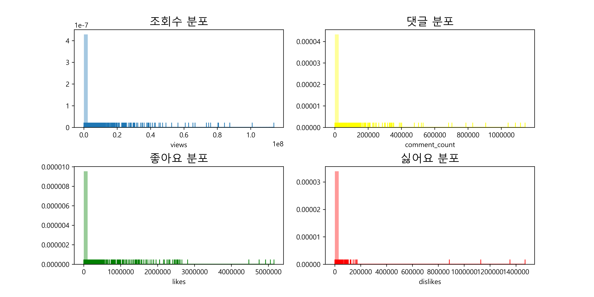
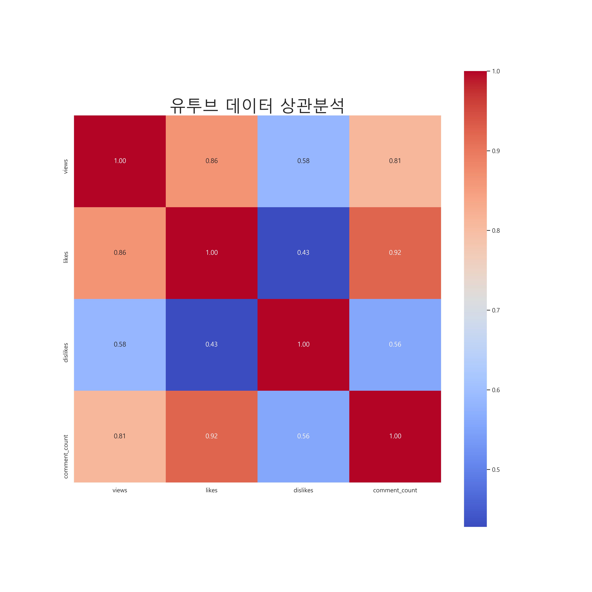
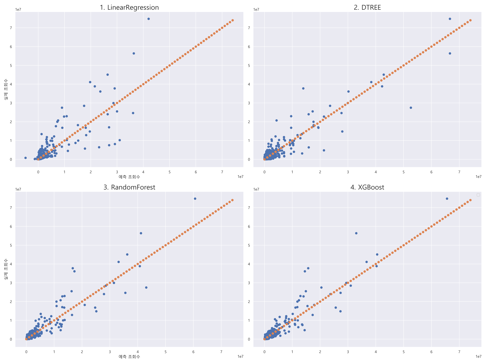

데이터 추출
{% if df %}
{{df|safe}}
{% endif %}
분포

상관계수행렬

상관분석 결과 좋아요수와 댓글수가 0.91로 가장 강한 상관관계를 보였으며
그 밑으로 조회수와 좋아요수 , 댓글수가 각각 0.86과 0.81로 역시 강한상관 관계를 보였습니다
그러나 싫어요수와 조회수 , 댓글수와의 상관관계는 각각 0.58 , 0.56으로 중간정도의 상관관계를 나타냈고
특히 좋아요수와 싫어요수는 0.43으로 약한 상관관계를 보였습니다.
여러 모델로 학습 · 예측

| 선형 회귀 | DTREE | 랜덤포레스트 | XGBoost |
| MAE | 318247.0 | 191537.0 | 205250.0 | 184313.0 |
| MSE | 1277338750183.0 | 650757236459.0 | 649295313018.0 | 587339611860.0 |
4가지 모델로 각각 학습한 결과 MAE와 MSE 둘다 가장 높은 모델은 LinearRegression
낮은 모델은 XGBoost라는 결과가 나왔습니다.
따라서 좋아요,싫어요,댓글수로 학습하여 조회수를 예측하는 작업은 XGBoost가 가장 적합한 모델입니다.